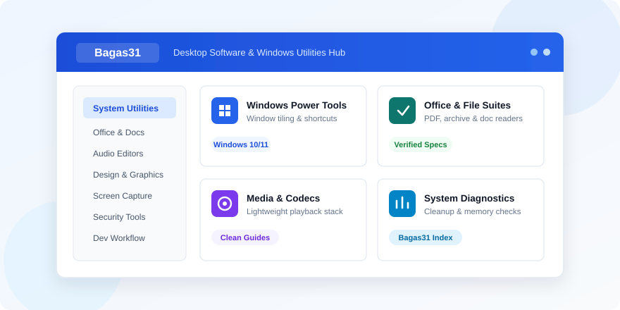
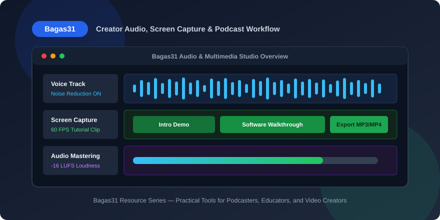
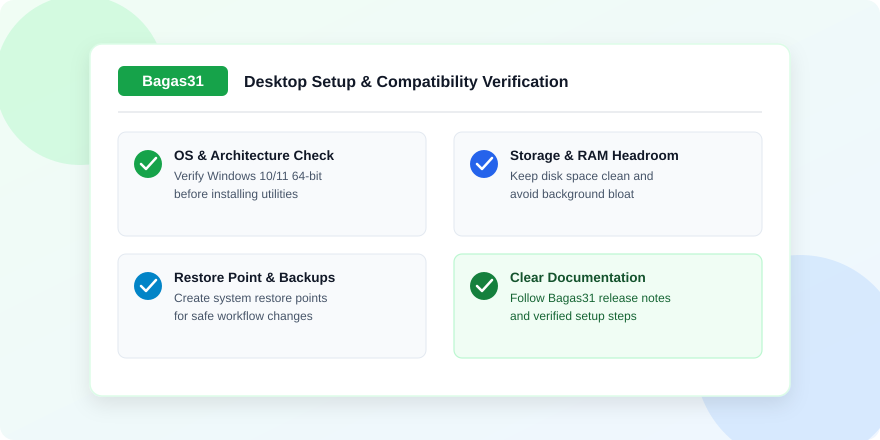

How Does Bagas31 Simplify Windows Software and Creator Workflows?
Every desktop computer tells a story about how its user works. A student preparing research papers relies on clean document readers, fast browsers, and dependable file archivers. A podcaster or video educator spends hours inside waveform editors, screen recorders, and media conversion tools. Meanwhile, software developers and office professionals depend on window managers, keyboard shortcuts, clipboard histories, and lightweight diagnostic utilities that keep the operating system responsive under heavy multitasking.
Despite how central desktop applications remain in everyday work, finding clear and well-structured information about what each tool does is still surprisingly difficult. Search results are frequently filled with vague summaries, outdated system requirements, or cluttered pages that leave beginners guessing whether a program supports Windows 10, Windows 11, or older hardware configurations. Building an efficient PC environment requires more than installing popular names; it requires understanding how categories of software fit together without slowing down memory, storage, or startup performance.
This comprehensive guide walks through the core pillars of a reliable desktop software setup. From lightweight operating system utilities and office productivity tools to audio production workflows, graphics programs, media codecs, and long-term maintenance habits, every section focuses on practical clarity so you can assemble a computer workspace that feels intentional, fast, and easy to maintain.
Understanding the Modern Desktop Software Ecosystem
Over the past decade, cloud applications have reshaped how teams collaborate, yet dedicated desktop software remains irreplaceable whenever performance, offline reliability, or precise hardware control matters. Editing multi-track podcast audio, rendering high-definition tutorial videos, batch-converting hundreds of office documents, or running memory diagnostics cannot rely purely on browser tabs when internet bandwidth fluctuates or large local files are involved.
For users across Southeast Asia and around the world, offline-friendly installers and clearly categorized desktop tools remain critical because many workspaces operate on mixed network speeds or shared laptops. When a program runs locally on Windows, users gain predictable responsiveness, lower latency during creative editing, and full control over file storage and backup directories.
However, abundance creates its own challenge. Thousands of utilities promise faster startups, cleaner disks, or effortless media editing, yet installing overlapping tools often causes background service conflicts, unnecessary RAM consumption, and cluttered context menus. Understanding each software category before installing anything prevents bloat and keeps your workstation lean.
Balancing Lightweight Tools with Full Creative Suites
A smart desktop setup pairs specialized lightweight utilities with only the heavy creative applications you genuinely use. For instance, if your weekly routine only involves trimming podcast intros, normalizing voice volume, and exporting clean audio files, a focused audio editor will launch in seconds and consume minimal memory compared to a massive studio workstation designed for orchestral scoring. Similarly, if you occasionally inspect vector layouts or crop screenshots for documentation, keeping a fast image viewer alongside one primary design tool avoids overloading your drive.
Separating daily utilities from heavy production suites also simplifies troubleshooting. When a single dedicated program handles screen recording and another handles archive extraction, updating or configuring one tool never disrupts the rest of your workflow. Clarity of purpose is the foundation of a stable computer.
Why Structured Software Guides Matter for Everyday Users
Technical literacy varies widely among PC users. Experienced technicians know immediately whether an application requires a 64-bit runtime, how much disk headroom an installer needs, or what a codec pack changes in media playback. First-time laptop owners, university students, and busy small-business operators rarely have time to decode dense release notes scattered across dozens of developer forums.
A well-organized software guide solves this gap by presenting essential details consistently before anyone starts a setup process. Knowing the file size, supported operating system versions, primary category, and practical use case empowers users to make informed choices quickly. Instead of guessing between three similarly named utilities, readers can compare features calmly and select the option that genuinely matches their hardware capabilities.
Structured documentation also protects newcomers from common installation mistakes. Many desktop frustrations stem from skipped prerequisites, mismatched system architectures, or misunderstanding optional setup checkboxes. Clear walkthroughs highlight what a tool is built for, how it integrates with Windows Explorer or default file associations, and what routine settings make the best starting point.

Essential Windows Utilities for Speed and Window Management
Even a fresh installation of Windows leaves plenty of room for practical workflow improvements. Out of the box, modern operating systems handle basic file browsing and window snapping well, yet anyone working across multiple documents, spreadsheets, browser tabs, and communication apps quickly notices repetitive friction. Purpose-built system utilities remove those small delays that quietly cost minutes every hour.
Advanced Window Layouts and Power User Shortcuts
Power user toolkits designed specifically for Windows have transformed how widescreen monitors and dual-display desks operate. Custom window zoning allows you to divide a large screen into exact columns or grids so your writing editor sits cleanly beside your research notes and audio timeline without manual resizing. Batch file renamers save hours when organizing hundreds of episode assets, screenshots, or client invoices using consistent naming rules.
Quick-launch command bars, color pickers, image resizers built directly into the right-click menu, and keyboard remappers further streamline everyday tasks. Instead of opening a heavy graphics program just to shrink three images for a blog post or article header, an integrated shell utility completes the task in two clicks. Keeping these tools modular allows you to toggle only the modules you actively use while leaving unused features disabled.
Browsers Built for Focus and Resource Control
Your web browser acts as the secondary operating system on any modern PC. Choosing a browser that matches your hardware profile and work habits matters enormously, especially on laptops with eight gigabytes of memory or mid-range processors. Productivity-focused browsers offer sidebar workspaces, vertical tab organization, built-in memory savers, and strict tracker controls that prevent background scripts from draining battery life.
For creators and researchers who keep thirty tabs open simultaneously, tab hibernation and workspace grouping prevent the chaotic slowdown that disrupts concentration. Pairing a fast primary browser with a clean secondary browser dedicated solely to testing web pages or managing separate work profiles keeps sessions isolated and organized.
Office Suites, Document Converters, and File Archiving Tools
Beyond creative apps and browsers, document management forms the backbone of everyday office and academic computing. Moving files smoothly between colleagues, clients, and publishing platforms requires dependable office suites, precise PDF and document converters, and fast archive utilities that handle compressed folders reliably.
Managing Documents and Batch Conversions Without Formatting Loss
One of the most frequent headaches in office work is receiving files in legacy or mixed formats—such as older spreadsheet exports, rich text drafts, HTML reports, or multi-page PDF documents that need conversion into editable formats. Dedicated document converters solve this cleanly by preserving table alignment, margins, and typography during batch processing.
When selecting an office suite or document utility, compatibility with open standards alongside standard Microsoft Office formats ensures smooth collaboration regardless of which software your partner uses. Features like lightweight PDF annotation, reliable print-to-PDF drivers, and clean keyboard navigation in text editors speed up daily writing and review cycles significantly.
Fast Text Editors and Archive Managers
Every Windows desktop benefits from having a fast, tabbed plain-text and code editor installed alongside full word processors. Lightweight editors open massive log files, configuration scripts, HTML templates, and Markdown notes instantaneously without auto-formatting quotes or inserting hidden styling tags. Syntax highlighting and multi-file search-and-replace turn tedious edits across dozens of files into a five-second operation.
Similarly, a dependable file archiver supporting compressed formats like ZIP, RAR, 7Z, and TAR eliminates extraction errors when downloading project bundles or asset libraries. Solid archive utilities also offer archive integrity testing, split-volume creation for large backups, and encrypted password protection when transferring sensitive business documents across shared storage.
Managing Portable Applications and Offline Installers
Not every workflow requires writing entries deep into the Windows Registry or installing permanent background services. Portable desktop applications run directly from a self-contained folder—whether stored on an external USB drive, a secondary data partition, or a synced workspace folder. For IT technicians, students using lab computers, and creators working across both a desktop tower and a travel laptop, portable utilities preserve identical preferences and plugins wherever the folder goes.
Keeping a well-labeled folder of offline installers provides another major practical advantage. When setting up a freshly formatted PC or assisting a colleague whose internet connection is unstable, standalone offline installation packages complete reliably without pausing halfway through a web-based downloader. Naming your installer archive cleanly with the application title, target operating system architecture, and release date prevents confusion months later when revisiting older hardware.
Portable software also encourages cleaner experimentation. If you want to test a specialized file renamer, network analyzer, or lightweight audio trimmer without modifying default file associations on your main workstation, running a portable build lets you evaluate every feature safely. When you finish testing, deleting the single application folder leaves zero leftover configuration clutter behind on the system drive.
Organizing Local Software Libraries for Multi-PC Teams
Small studios, classrooms, and remote agencies often maintain multiple Windows machines that need matching toolsets. Standardizing on a shared internal software inventory—listing approved browsers, archive tools, PDF viewers, and media utilities—ensures that every team member opens and exports files identically. Whenever a project moves from an audio editor’s workstation to a video editor’s desk, consistent utility versions eliminate unexpected formatting mismatches or missing font warnings.
Audio Editing, Screen Capture, and Podcasting Workflows
The rapid growth of independent podcasts, educational channels, and remote tutorials has turned ordinary home computers into compact production studios. Whether you are recording a solo technology commentary, interviewing a guest online, or narrating a step-by-step software walkthrough, audio clarity determines whether listeners stay engaged past the first thirty seconds.
Recording Clean Voice Tracks on Any Desk
Great audio starts before you press record, yet desktop audio editors do the heavy lifting once a track is captured. Removing constant room hum from ceiling fans or laptop cooling vents, trimming awkward pauses, applying gentle compression so quiet sentences match louder remarks, and normalizing final loudness to streaming standards transform raw microphone recordings into polished episodes.
Podcasters working on Windows should organize each episode inside its own dedicated project folder containing raw recordings, background beds, intro stingers, and exported MP3 or WAV masters. Keeping project folders structured prevents broken file references and makes producing follow-up episodes twice as fast because you can reuse proven equalizer and compressor presets.
Screen Capture and Tutorial Recording Essentials
Visual learners rely heavily on screen-recorded demonstrations. Effective screen capture software goes beyond grabbing full-screen video; it lets you target specific application windows, highlight mouse clicks, capture clean system audio alongside microphone narration, and annotate screenshots immediately with arrows or callouts.
Matching your capture resolution and frame rate to the actual tutorial topic keeps output files crisp without creating gigantic video dumps. Standard software walkthroughs look razor-sharp at thirty frames per second with clear audio bitrates, while fast-paced interface animations or game benchmarks benefit from sixty frames per second capture combined with hardware-accelerated encoding.

Video Editors, Media Codecs, and Graphics Software Selection
Once audio and screen recordings are captured, bringing everything together requires media tools that run smoothly on your available graphics card and processor. Many beginners assume they must install the most complex Hollywood-grade nonlinear editor available, only to struggle with slow timeline scrubbing and long export queues on standard laptops.
Choosing Video Converters and Editors That Fit Your Hardware
Understanding the difference between a full timeline video editor and a dedicated media converter saves tremendous effort. If you simply need to trim clip edges, merge two recordings, extract an MP3 soundtrack from a video webinar, or compress a massive screen capture for faster web uploads, a fast video converter finishes the job in a fraction of the time.
For full multi-layer editing—combining lower-third title cards, picture-in-picture webcam overlays, color corrections, and synchronized background music—look for editors that support proxy editing or hardware acceleration. Generating lightweight proxy files during editing lets modest laptops scrub smoothly across long timelines while exporting at full resolution when you finish.
Lightweight Media Players and Codec Stability
Nothing interrupts a review session faster than opening a client video file only to hear audio with a black screen because a specific codec is missing. Installing a clean, trusted media player paired with well-maintained playback codecs ensures smooth decoding across MKV, MP4, AVI, FLAC, and high-efficiency formats without cluttering Windows with conflicting filter packs.
Classic lightweight media players remain favorites among experienced PC users precisely because they launch instantly, support frame-by-frame stepping, allow precise subtitle timing adjustments, and consume almost zero background memory. Keeping one dependable player as your default prevents heavy streaming apps from taking over simple local file previews.
Vector Design and Raster Graphics Basics
Visual presentation matters equally for bloggers, podcasters, and business presenters. Podcast episode thumbnails, YouTube banners, social cards, and documentation diagrams all benefit from pairing one raster editor for photo adjustments with a vector graphics tool for crisp logos, badges, and scalable icons.
Vector tools shine whenever text sharpness and geometric precision matter, because shapes remain mathematically crisp at any zoom level without blurry pixel edges. Meanwhile, raster editors handle lighting tweaks, background cleanup, and photographic cropping. Knowing which job belongs to each tool keeps design assets clean and reusable across websites and audio platforms.
System Maintenance, Memory Diagnostics, and Storage Hygiene
Even the finest productivity tools feel sluggish on a neglected operating system. Over months of daily installs, browser caching, Windows updates, and temporary render folders, desktop computers accumulate gigabytes of orphaned files and background startup entries that quietly stretch boot times and eat into available memory.
Keeping Disk Storage Clean Without Breaking System Files
Healthy disk maintenance focuses on predictable, reversible cleanup rather than aggressive registry tweaking. Clearing old browser caches, obsolete update installers, duplicate download archives, and temporary media render caches recovers significant solid-state drive capacity while preserving system stability. Maintaining at least fifteen to twenty percent free space on your primary system drive is especially important for SSD longevity and virtual memory paging performance.
Periodic disk analyzers also reveal hidden storage hogs visually, showing whether forgotten game installations, raw video recordings, or virtual machine snapshots are consuming half your drive. Addressing large folders manually after reviewing them gives you far better results than running automated cleaner tools blindly every day.
Monitoring RAM Stability and Hardware Health
Random application crashes, corrupted file downloads, or unexpected blue screens during heavy rendering often point to unstable memory modules or overheating components rather than software bugs. Lightweight memory testing utilities and hardware temperature monitors help diagnose whether your RAM sticks and processor cooling fan remain healthy under sustained load.
Checking hardware diagnostics once every few months—or immediately after upgrading RAM or installing new storage—builds confidence that your creative projects will not fail midway through a critical export. Catching minor thermal throttling early by cleaning dust from laptop vents can restore lost performance more effectively than any software tweak.
Hardware Compatibility, System Restore Points, and Safe Setup Habits
Careful preparation before installing new utilities is the single habit that separates stress-free PC management from frustrating recovery sessions. Spending two minutes checking compatibility and creating a fallback plan protects your active work files and keeps your Windows environment predictable.
- Confirm operating system and architecture requirements: Always verify whether an application expects 64-bit Windows 10 or Windows 11, specific graphics driver versions, or runtime libraries before starting installation.
- Review disk space and background processes: Close active media renders, cloud sync uploads, and browsers holding unsaved forms prior to installing system-level utilities that interact with Windows Explorer or audio drivers.
- Create a Windows System Restore point: Before testing unfamiliar system utilities or codec packages, creating a manual restore point allows you to roll back system settings and drivers cleanly within minutes if anything conflicts.
- Back up active project folders separately: Store ongoing podcast recordings, documents, and design templates in an organized project directory backed up to external storage or cloud sync so operating system maintenance never touches creative work.
- Audit startup applications monthly: Open Task Manager’s Startup tab regularly to disable updater helpers and chat clients that do not need to launch automatically every time you power on the computer.

Evaluating Software Alternatives Calmly
Whenever an application feels bloated, demands intrusive background services, or stops receiving compatibility updates for current Windows builds, exploring lightweight alternatives keeps your computer agile. Modern open-source and specialized desktop utilities frequently match or exceed legacy programs while running faster and requiring fewer background permissions.
Testing new software methodically—evaluating interface responsiveness, export quality, memory usage in Task Manager, and clean uninstallation behavior—lets you curate a personal toolkit based on real performance rather than marketing claims. Over time, you end up with a compact library of proven tools you know inside out.
Network Tools, Download Managers, and Cloud Sync Balance
Reliable file transfers are often overlooked when planning a Windows workstation, yet unstable connections can easily interrupt large media kits, software documentation archives, or high-resolution video exports. Dedicated download managers split large transfers smoothly, support pause-and-resume recovery when Wi-Fi drops, and organize incoming packages automatically into clean subfolders by file type rather than dumping everything into a single overflowing Downloads directory.
At the same time, managing how background cloud sync clients interact with local projects prevents unexpected slowdowns. Synchronization tools constantly watch working directories for changes. When an audio editor writes dozens of temporary peak files or a video renderer generates gigabytes of preview frames inside a synced folder, background upload traffic can saturate both your SSD bandwidth and upload connection. Keeping active scratch folders outside synchronized directories—and moving only finished master exports into cloud backup folders—delivers dramatically faster editing performance.
Simple network diagnostic utilities also help troubleshoot slow transfers before blaming your desktop applications. Knowing how to check active bandwidth consumers in Resource Monitor, verify local DNS responsiveness, and confirm file checksums after transferring multi-gigabyte archives prevents silent corruption and saves hours of repeated troubleshooting.
Building a Long-Term Productivity Stack for Work and Study
The best computer setup is rarely the one with the longest list of installed apps; it is the one where every installed tool serves a clear, recurring purpose and stays out of your way until needed. By organizing your software stack into distinct layers—core operating system utilities, document and archive managers, audio and video creation tools, and periodic diagnostic checks—your PC remains responsive years after its initial setup.
Documenting Your Own Personal Setup
Consider keeping a simple text document or markdown note listing your essential installed applications, custom keyboard shortcuts, audio processing settings, and preferred browser configurations. Whenever you migrate to a new laptop, reinstall Windows cleanly, or set up a secondary workstation, that personal reference lets you rebuild your entire productive environment in under an hour instead of spending days remembering which tools you relied on.
Combining disciplined setup habits with clear software documentation turns technology from a source of occasional frustration into a dependable creative partner. Whether you are publishing weekly podcast episodes, editing tutorial graphics, analyzing system performance, or managing everyday academic documents, an intentional desktop ecosystem lets you focus completely on producing great work.
Scheduling Seasonal Updates and Cleanups
Rather than reacting only when storage fills up or an app freezes right before a deadline, set aside twenty minutes at the end of every quarter to review your desktop toolkit. Check which applications you opened regularly during the past ninety days, uninstall trial tools you no longer use, archive finished media projects onto external backup drives, and verify that your core utilities are running stable versions compatible with current Windows feature updates.
Seasonal reviews also create an ideal moment to test your backup recovery workflow. Confirming that your project templates, browser bookmarks, audio presets, and critical spreadsheets open properly from external storage ensures you never rely on blind luck. With a clean folder structure, dependable core utilities, and concise documentation kept close at hand, maintaining peak desktop performance becomes effortless rather than a chore.
Wrapping Up Your Desktop Software Strategy
Building a capable computer environment does not require expensive enterprise subscriptions or hundreds of background utilities running simultaneously. By focusing on clearly categorized software guides, matching tool weight to your real hardware capacity, keeping audio and video project folders disciplined, and verifying system stability ahead of major changes, every Windows PC can remain fast, predictable, and genuinely enjoyable to work on every single day.